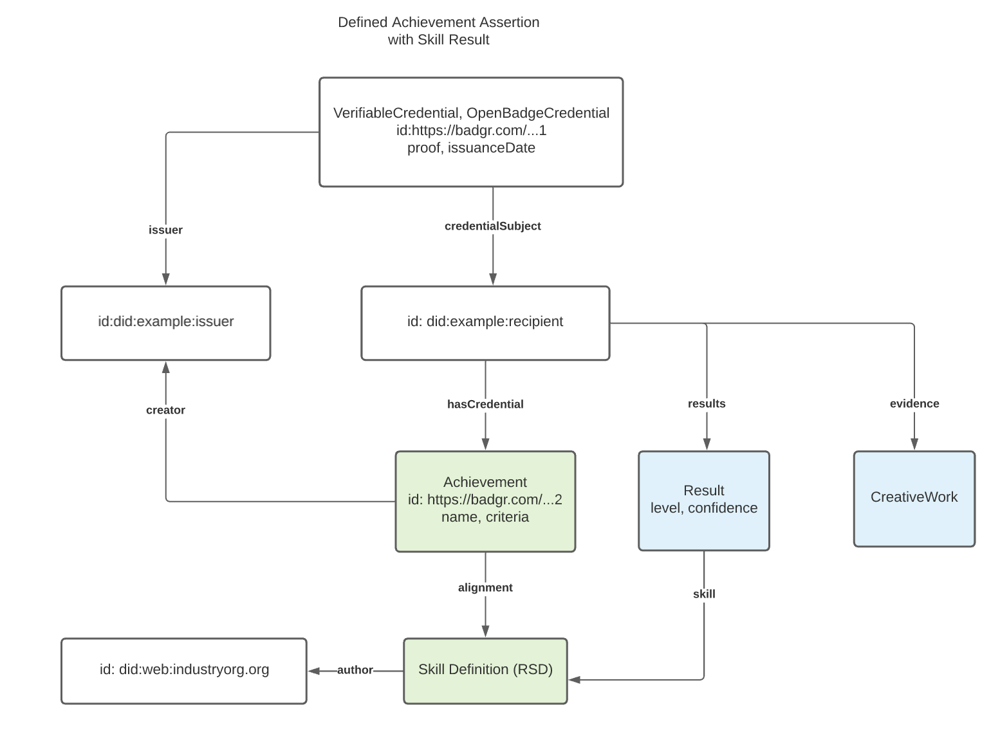

Recipients of this document are requested to submit, with their
comments, notification of any relevant patent claims or other
intellectual property rights of which they may be aware that might be
infringed by any implementation of the specification set forth in this
document, and to provide supporting documentation.
IMS takes no position regarding the validity or scope of any
intellectual property or other rights that might be claimed to pertain
implementation or use of the technology described in this document or
the extent to which any license under such rights might or might not be
available; neither does it represent that it has made any effort to
identify any such rights. Information on IMS's procedures with respect
to rights in IMS specifications can be found at the IMS Intellectual
Property Rights webpage:
http://www.imsglobal.org/ipr/imsipr_policyFinal.pdf .
The following participating organizations have made explicit license
commitments to this specification:
Org name
Date election made
Necessary claims
Type
Concentric Sky
October 24, 2019
No
RF RAND (Required & Optional Elements)
Digital Knowledge
October 11, 2019
No
RF RAND (Required & Optional Elements)
Washington State Board for Community and Technical Colleges (WSBCTC)
Permission is granted to all parties to use excerpts from this document
as needed in producing requests for proposals.
The limited permissions granted above are perpetual and will not be
revoked by IMS or its successors or assigns.
THIS SPECIFICATION IS BEING OFFERED WITHOUT ANY WARRANTY WHATSOEVER, AND
IN PARTICULAR, ANY WARRANTY OF NONINFRINGEMENT IS EXPRESSLY DISCLAIMED.
ANY USE OF THIS SPECIFICATION SHALL BE MADE ENTIRELY AT THE
IMPLEMENTER'S OWN RISK, AND NEITHER THE CONSORTIUM, NOR ANY OF ITS
MEMBERS OR SUBMITTERS, SHALL HAVE ANY LIABILITY WHATSOEVER TO ANY
IMPLEMENTER OR THIRD PARTY FOR ANY DAMAGES OF ANY NATURE WHATSOEVER,
DIRECTLY OR INDIRECTLY, ARISING FROM THE USE OF THIS SPECIFICATION.
This is a proposal to recharter the Open Badges Workgroup to develop a new version of the IMS Global Open Badges Specification to align it to the conventions of the W3C Verifiable Credentials Data Model for the use cases of Defined Achievement Claim and a Skill Claim. The credentials that would be produced under this proposal could easily be bundled into Comprehensive Learner Records and Verifiable Presentations. Portability and learner data privacy may be improved by expanding the usage of cryptographic proofs/signatures, because this format will be compatible with a growing array of proof schemas that are developed for the Verifiable Credentials Data Model.
Conformance
This document is an informative resource in the Document Set of the
Open Badges Specification specification
[OB-30].
As such, it does not include any normative requirements. Occurrences in this
document of terms such as MAY, MUST, MUST NOT, SHOULD or RECOMMENDED have no
impact on the conformance criteria for implementors of this specification.
1. Introduction
1.1 Document Set
The Open Badges Specification has several related documents and artifacts shown below. Together
they make up the specification.
1.1.1 Informative Documents
Informative documents do not specify requirements.
Open Badges Specification v3.0 (this document) - Intended to be the first, and
possibly only document you need to understand the specification and even implement a simple
prototype. Many examples are included which you can copy to issue, display, or verify your
first open badge.
1.1.2 Normative Documents
Normative documents specify requirements. Normative documents may include informative sections.
OpenAPI files you can use to generate template code that implements the consumer or server API. These links go directly to the corresponding OpenAPI file:
JSON Schema files which define the JSON serialization of the classes and properties in the Open Badges Data Model. These links go directly to the corresponding JSON Schema file:
Open Badges Specification Information Model v3.0 - Specifies the abstract data model of this specification and its relationship to the IMS Common Data Model, the logical data model, and extension methods available to this specification. This is a reference document for all the other documents that make up this specification.
1.2 Design Goals and Rationale
This proposal to charter the development of a 3.0 version of Open Badges describes how to align Open Badges with the next generation of general-purpose digital credentials, the W3C Verifiable Credentials Data Model, within which Open Badges can take its place as the leading schema for educational achievement claims within a growing world of widely interoperable digital credentials.
This proposal also suggests important steps to align Open Badges and the Comprehensive Learner Record (CLR) specification by describing the scopes and compatibility that is possible when both models have been aligned with the W3C Verifiable Credentials Data Model. When both models share concepts of an Assertion and an Achievement, consistency can be reached whether single achievements or collections of achievements are being asserted as Verifiable Credentials.
Introducing a new major capability to Open Badges is also on the table: skill assertions are a proposed method for issuers to make claims about the achievement of skills more directly without requiring the creation of a BadgeClass in order to recognize skills that are important to a particular industry or discipline.
1.3 Use Cases
Below are use cases illustrating the power of Open Badges as Verifiable Credentials.
Online Course Completion: Maya completed an online course for an "Introduction to Web QA" at her local community college. The community college issued her a course completion badge which she stored in her digital wallet with her other credentials. This course was a prerequisite for a more advanced course being offered online by a MOOC. When Maya registers for the advanced course, she is asked to provide the proof that she completed the prerequisite course. From her wallet, Maya provides the course badge and upon verification, she is registered for the MOOC.
License Issuance: After Jeremy takes his electrician licensure exam, he accesses the online system for his states licensure department to see his results and download his license. After he proves his identity by sharing his government issued ID from his digital wallet, he is informed that he passed the exam and is issued his electricians license badge which he stores in his digital wallet with his other digital credentials.
Mapping Skills: Syd is shifting careers after many years working in construction. In their digital wallet they had several skill badges describing their mastery of several skills in construction but also in teamwork, communication, and organizational skills. Syd also had badges from some courses they'd taken in science and math over the last few years. After they uploaded the skill and course badges from their wallet to a career planning site, they were offered several opportunities to apply for work in software sales and cybersecurity.
Verifying Continuing Ed: Denise was offered a new job at a hospital as a physician assistant. Before starting, her continuing education training and license to practice needed to be verified. The last time she switched hospitals, the verification process took three weeks. This time, she was able to provide her badges to prove her training and license. Within minutes her credentials were verified and she was issued a new digital staff credential.
1.4 Terms
Achievement: This is the content description of a credential that an assertion references. It contaoins metadata such as the name of the achievement, description, alignment of skills, etc. An Open Badge asserts a single achievement. CLRs may have a collection of assertions containing a collection of achievements.
achievementType: A CLR property being proposed as an addition to Open Badges 3.0 which describes the type of achievement. See "dtExtensibleAchievementType" Class.
Assertion: The core of both Open Badges and CLR is the assertion about achievement(s). Assertion properties are specific to one learner's achievement and specify metadata such as issuer, date of achievement, expiration data, as well as results and evidence that support the assertion. A Verifiable Credential more broadly asserts a claim about a credentialSubject which can be applied to education and occupational achievements.
credentialSubject: Describes the claims being made by the Verifiable Credential. See Credential Subject.
Decentralized Identifiers: A type of identifier for people, organizations and any other entity, where each identifier is controlled independently of centralized registries. See DID Use Cases Intro.
Relying Third-Party: Also referred to as the "verifier" of a VC. This entity requests, verifies, and may consume data being presented.
Rich Skill Descriptors (RSD): A machine readable reference to a description of a skill located at a unique URL. See Rich Skill Descriptor (RSD).
result: A property which describes a possible achievement result. See "dtResult" Class.
resultDescription: A CLR property being proposed as an addition to Open Badges 3.0 which describes a possible achievement result. See "dtResultDescription" Class.
Skill Assertion: an Open Badges assertion that contains a "skill result."
Verifiable Presentation: A Verifiable Presentation is a tamper-evident presentation of one or more Verifiable Credentials of which cryptographic verification can be used to determine the trustworthiness of the authorship of the data.
Verifiable Credentials (VCs) are a format that is used to publish a limitless variety of claims about a subject person or other entity, typically through a cryptographic proof. VCs can be collected and delivered as part of a presentation whereby authorship of each VC from the same or multiple issuers can be trusted via cryptographic verification. The presentation can also be cryptographically signed to demonstrate that the holder has assembled and sent the collection of VCs.
These layers of cryptographic proof can provide security and privacy enhancements to Open Badges that are not yet available in version 2.0. Adoption of Verifiable Credentials can increase market penetration and use of Open Badges by addressing market needs for trustworthy machine-ready data to power connected ecosystems in education and workforce. This can unlock the door for Open Badges credentials to be included in a growing number of multi-purpose digital credential wallets entering the market. Stepping further into signed VCs and another associated technology, decentralized identifiers (DIDs), unlocks increased longevity and resilience of Open Badges that can describe achievements even more expressively than they do today.
2.2 What does adopting Verifiable Credentials entail?
This proposal is for a reasonable change to the structure of the Open Badges Assertion class, to adopt the conventions of the Verifiable Credential Data Model. This means that badges issued under the proposed version would not be conformant to all of the existing 2.x data model requirements.
An existing Open Badges Assertion, illustrated in the graphic below, structures its objects like this:
An Assertion identifies a recipient with a "recipient" relationship to an IdentityObject that contains identifying properties. It identifies which badge it represents with a "badge" relationship to a BadgeClass. It identifies its verification information with a "verification" relationship to a VerificationObject. It identifies its issuer with an "issuer" relationship between the BadgeClass and the Issuer.
Figure 1 Open Badges 2.0 Diagram
The proposed Verifiable Credentials structure depicted below offers the same information with a slightly different structure: A Verifiable Credential identifies its recipient with a "credentialSubject" relationship to a subject class that is identified by an identifier. It identifies its issuer with an "issuer" relationship directly to an Issuer. The Credential claims the subject has met the criteria of a specific BadgeClass (also known by its CLR alias as an "Achievement") with a "hasCredential" relationship to that defined achievement. It identifies its verification information with a "proof" relationship to an instance of a proof that follows a standardized schema.
Figure 2 Open Badges 3.0 Proposed Diagram
2.3 Benefits and Opportunities
It can be risky to make breaking changes to a specification used as broadly as Open Badges, but there are a range of benefits to making this move now while the Verifiable Credentials ecosystem is young and growing fast. There are strong use cases for digital credentials for learning and skill achievements across the nexus of education and employment, as we have seen from the broad adoption of Open Badges and the proliferation of industry groups making connections between educational institutions and the employment market around digital credentials. Technical compatibility is in a more favorable position when faced with rapid ecosystem growth than competition between large communities issuing these learning credentials and other communities focused on different market verticals from government identity documents, commercial payments, and international trade, to name a few.
This proposal opens a path forward for a unified concept of digital credentials in the IMS Global community, collapsing the relevant differences between Open Badges and CLR, and addressing a clear set of single achievement use cases with a robust, flexible, and future-proof solution that can easily be integrated with the set-of-multiple credentials use cases familiar to Comprehensive Learner Record.
Below, we present a selection of benefits related to the proposed restructuring of Open Badges, and compare the opportunities opened by becoming compatible with Verifiable Credentials to the limitations that the Open Badges community has encountered with today's version of Open Badges and CLR.
2.3.1 Interoperability with Digital Wallets, Verifiable Presentations, and Learner Experiences
Open Badges as VCs are designed to be issued and offered to learners who may accept them into their digital wallet. Wallets are software that runs on either the web or as a native app on a mobile device or desktop environment. A web wallet is another term to describe the application role known under 2.0 as a "Host". There is an existing and growing ecosystem of deployed technology to support VCs; integration with these becomes possible if Open Badges adopts VCs along the lines of this proposal. For example, a number of generic Verifiable Credential wallet implementations are available from a variety of vendors as native mobile apps. From a wallet, recipients may package their badges along with their other VCs into verifiable presentations. A presentation contains the credentials that the learner wishes to share with a relying party. The digital wallet application digitally signs the presentation using the key of the learner. The verifying third-parties can cryptographically verify that the presentation came unmodified directly from the credential holder as well as the integrity of each of the VCs included in the presentation as credentials signed by each of their respective issuers.
It is possible from a wallet to package credentials into a verifiable presentation in response to a request from a relying party who seeks credentials for a certain purpose. For example, a potential employer seeking to fill an internship role, may need to verify that a student is over 18, has completed a course on communication, and is a current student. A student could use their wallet to package three VCs (driver's license, course completion badge, and student ID) into a presentation that is signed by their private key. When the presentation is sent to the employer's website, the employer can verify that the VCs belong to the student and that the VCs are authentic. Protocols and interoperability around making and fulfilling requests are still at an early stage, but when these technologies are tested in the wild, it would be a good idea to already have educational credentials claim schemas available for the claim types ("defined achievement" and "skill assertion") possible to make with Open Badges.
The growing collection of VC wallets is an example of how adopting a Verifiable Credentials-based approach allows Open Badges to grow in impact and take advantage of existing momentum in the digital credentials space around tooling that is entering the market and heading towards maturity.
2.3.2 Verifiable Credentials Support Increases Learner Data Privacy and Trustworthiness of Open Badges
The W3C Verifiable Credentials Data Model specification describes how technologies can be used to present cryptographically verifiable and tamper-evident claims. Verifiable Credentials (VCs) can be verified through up-to-date and broadly interoperable schemas for verification. This can provide security and privacy enhancements to IMS Global Open Badges that are not available in Open Badges 2.0.
Currently, Open Badges 2.0 data can be verified via either (a) publicly accessible hosted JSON badge data or (b) JWS digitally signed badges with a limited number of algorithms and key types, depending on the verification method chosen by the issuer. In order to keep up with evolving cryptographic standards without taking on the burden of writing cryptographic suites as a community not specializing in that function, adopting Verifiable Credentials proofs allows experts to update algorithms to keep up with improvements to cryptography-breaking processing power.
Publicly hosted badge data has been the preferred method of many Open Badges issuers. This method can risk the privacy of badge recipients who are reliant on the issuers to host their data leaving them with no direct control over its accessibility. There is also the potential that data about individuals is publicly accessible without their knowledge. Most Open Badges don't contain significant amounts of personally identifiable information, but they are subject to correlation. This could lead to on-site identification, email spam, and also cause badges to be correlatable with other personally identifying data on the web.
Hosted badge data is also not tamper-evident since it is hosted on web servers typically as dynamically-generated JSON files populated by queries made to relational databases or static JSON files. This makes the data easy to change without any historic reference or preservation. This can be convenient for issuers but not assuring for relying third-parties seeking to put the data to use. Changes to badge metadata such as criteria, the issuedOn date, and recipient email can reduce the perceived quality of data and reflect incorrect information about the learners' experiences. Digitally signed 2.0 badges provide more assurances and privacy than the hosted badges but are not commonly issued and are not interoperable with VC wallets.
There's been very little evidence that badge JSON data has been readily consumed by machines, but technologies and the education and workforce markets have evolved since Open Badges 2.0 was released 4 years ago. Machine learning and AI uses have expanded alongside blockchain and other decentralized technologies creating opportunity for connecting learners to opportunities, more accurate skills-based hiring, and updated curricula more equitably reflecting the needs of students. The market is demanding that the achievement data be trustworthy. This means that it should be accessible, protected, have integrity, and communicate what was intended including that the issuer and subjects of the data can be authenticated and that the data has not been tampered with since it was issued. Shifting Open Badges to align with the VC conventions to verify learner achievements meets these expectations and provides learners with more agency over their achievement data by giving them immediate access to it for as long as they need it, allowing them to choose which data they share, protecting it, and making it work with other credentials in and outside of education and workforce.
2.3.3 Decentralized Identifiers and Self-Sovereign Identity
With Open Badges up to 2.0, email addresses have been used as identifiers far more commonly than the other available options. This has been problematic because email addresses may be used by more than one person, are often revoked when an individual leaves a job or school, are insecure, and aren't intended to be identifiers. Identifiers in VCs commonly are HTTP-based URLs, follow another scheme of IRI, or take the form of a Decentralized Identifier.
Decentralized identifiers (DIDs) are a type of identifier for people, organizations and any other entity, where each identifier is controlled independently of centralized registries. Each DID can be resolved through an operation described by its particular "DID Method" to reveal a DID document that describes the subject. Whereas previous versions of Open Badges required HTTP(s) identifiers for issuers and typically used email (or rarely URL) identifiers for learners, adoption of the Verifiable Credentials Data Model provides simple conventions for badge issuers and recipients to begin to use DIDs when they desire.
Verification of control of identifiers is an important concept within any type of digital credential, both with respect to the issuer and the subject (recipient) of the credential. For issuers, Open Badges has relied on its own bespoke rules for determining whether a hosted Assertion URL or cryptographic key URL is associated with an issuer profile identified by a particular URL. URLs used for recipient identifiers have no built-in mechanism for authentication. Email and telephone number based recipient identifier authentication are up to the relying party, but there are common methods for performing this task essential to establishing trusted proof of control of credentials presented by a subject.
DIDs typically offer cryptographic proof of control, based on authorized keys or other verification methods expressed in the associated DID Document. While these protocols are not broadly implemented across domains today, the structure provides a forward-looking flexible and extensible mechanism to build the types of protocols needed to connect credentials back to the identities of their issuers and subjects. The Open Badges community may ultimately recommend use of only a small number of these capabilities in early releases or recommend them only for experimental use, like with cryptographic proof methods. But this is still an important step, because there is no reason for the Open Badges community to be closed to interoperability through the protocols being developed for use by the wallets and services coming into being elsewhere by delaying the option to use DIDs for recipient and issuer identifiers.
2.3.4 Aligning Open Badges and CLR with Common Assertion and Achievement Models
As described below, it is possible for Open Badges and CLR to produce coordinated specs particularly if both specs are aligned with Verifiable Credentials. Discussion of the components of individual achievements can occur within the Open Badges workgroup, and discussion of more complex use cases necessitating needs for bundling and association of multiple achievements on behalf of a publisher can occur within the CLR group. The cross-pollination of members of each effort will create opportunities to coordinate and ensure that all important use cases for single assertions and bundles of associated assertions are well-handled. The openness of the Open Badges Specification can be preserved so that the broader community can continue to be aware of and connected to the official developments.
At the core, Open Badges and CLR have similar objectives with the primary difference being single vs a collection of credentials. A common assertion model ensures that Open Badges can be included in CLR collections and that both CLRs and Open Badges can be held separately by learners in their Verifiable Credential wallets.
Both Open Badges and CLR make assertions about achievements and conceptually share many similar properties. With some judicious analysis and renaming of some properties, it is possible to have cross-alignment of achievement properties served by Open Badges and used by CLR. Examples include but are not limited to achievementType which describes the type of achievement being represented, and Result/ResultDescription which can describe possible levels of mastery associated to specific achievements. This will enrich Open Badges data and increase the perceived significance and usage of Open Badges to deliver verifiable single achievements such as certifications, licenses, courses, etc. Using a common model across Open Badges and CLR specifications for the core ideas of assertion and achievement will enable the CLR specification to focus on the more complex requirements of bundling collected assertions and expressing the associations between the achievements.
2.3.5 Differentiating Issuers and Creators
In Open Badges and CLR, the issuer is assumed to be the creator. Over the years, the Open Badges community has requested capabilities to distinguish between the issuer and creator of a badge. This is because there are plenty of examples where the assessor is the issuer but not the creator of the badge. The Original Creator Extensions is a step in this direction but provides no properties to describe the eligibility of issuers trusted by the original creator to duplicate and issue their own assertions of the badge.
In order to open up a wide swath of use cases for shared issuing responsibility of common credentials, we must do more. Conveniently, an issuer property for the entity that is digitally signing the credential is included in the VC assertion. Because of this, the issuer property referenced in the BadgeClass is redundant. This property is a logical placement for new properties to describe a creator(s) and the eligibility of potential outside issuers to share or have delegated responsibility for badge issuance. This will enable the use cases and give relying third-parties more contextual information about the achievement and the parties involved.
2.4 Skill Assertions
Many of the use cases for Open Badges and CLR involve describing "defined achievements" with the Achievement/BadgeClass data class. These achievements may sometimes be aligned to skills or competencies, as a means of indicating that those who earn them have achieved the aligned skills. As part of this proposal, we also introduce the concept of a Skill Assertion, showing how the Open Badges Specification can be expanded to assert achievement of single skills in a more flexible manner that is complementary to these use cases and that opens up a wide range of new use cases. A Skill Assertion offers a lightweight structure for issuers to make a claim that a learner has a skill, with a particular assessment result if desired.
A Skill Assertion is an Open Badges assertion that contains a "skill result." The idea of a skill result fits perfectly with the concept from CLR of a Result that is paired against the ResultDescription defined in an Achievement/BadgeClass, but a skill result targets a skill that may have been defined by a third-party organization, such as an industry group. This is a separate claim that may be composed alongside a "hasCredential" claim that identifies which Achievement/BadgeClass criteria has been met, or it could appear in an Open Badges Verifiable Credential without the defined achievement claim. This means that an issuer could easily make an assertion that a learner has achieved the criteria of a certain badge, or that they have achieved a specific skill, or both (whether or not the skill is specifically identified in the alignments of the badge).
The following diagram shows how these concepts are connected for a use case in which an issuer asserts that a credential subject has achieved a particular skill, using a "results" claim to establish a relationship with a Result class that identifies which skill is recognized and may describe other aspects of the skill achievement, such as the level at which it was assessed and a degree of confidence. Specific use cases for how this data needs to be consumed will drive the specific skill-specific properties of the Result class that may be added to give issuers the options they need. In this example, a Skill Definition that is identified by a unique URL at which information about the skill is published is referenced by the Result. This pattern, named by the Open Skills Network as a Rich Skill Descriptor (RSD), makes it possible for skills to be precisely referenced in other entities, such as credentials. Here, the RSD was published by an industry organization, and included in this credential by a different issuer. There is no need for the skill author and the credential issuer to have a pre-existing or discoverable relationship in order for a Skill Assertion to be valid. Evidence may also be included, just like in any Assertion.
Figure 3 Skill Assertion with Evidence Diagram
The notion of skill results can be combined with a defined achievement assertion claim "hasCredential". In this example, the same Skill Assertion appears, but additional criteria that the learner has met is described in the Achievement/BadgeClass as in many of our other examples. The Achievement aligns to the same skill that is recognized, but the Result allows the issuer to describe specifics about the assessment results relative to the skill.

Figure 4 Defined Achievement Assertion with Skill Result Diagram
The inclusion of Skill Assertion claims makes a natural, ergonomic fit with defined achievement claims and evidence claims. Business logic to process each of the available claims can look for just the data a relying party needs, and extraneous claims do not get in the way.
Example 1: Example of an Open Badge as a Verifiable Credential
{
"@context": [
"https://www.w3.org/2018/credentials/v1",
"https://w3id.org/openbadges/v3"
],
"type": [
"VerifiableCredential",
"Open Badge"
],
"id": "https://website-that-supports-or-displays-the-badge.html",
"issuer": {
"id": "did:example:issuer",
"name": "An Example Issuer",
"image": "https://example.org/logo.png",
"url": "https://example.org",
"email": "contact@example.org"
},
"issuanceDate": "2010-01-01T19:23:24Z",
"credentialSubject": {
"id": "did:example:learner",
"achievement": {
"id": "https://example.org/achievements/123",
"type": "Achievement",
"achievementType": "Certificate",
"name": "Robotic Drones Analysis",
"description": "Learn to analyze and present the different types of robotic drones",
"image": "https://example.org/drone-image.png",
"creator": "did:example:issuer",
"criteria": "https://example.org/robotics-drone-analysis.html",
"tags": ["robots", "not birds"],
"alignment": [{
"targetName": "CCSS.ELA-Literacy.RST.11-12.3",
"targetUrl": "http://www.corestandards.org/ELA-Literacy/RST/11-12/3",
"targetDescription": "Follow precisely a complex multistep procedure when carrying out experiments, taking measurements, or performing technical tasks; analyze the specific results based on explanations in the text.",
"targetCode": "CCSS.ELA-Literacy.RST.11-12.3"
}],
"resultDescription": [{
"id": "urn:uuid:da72e42e-9f38-4c42-83ac-33f6cb9bb3b1",
"name": "Mastery",
"resultType": "PerformanceLevel",
"rubricCriterionLevels": [{
"id": "urn:uuid:24df3f14-4b9b-41b9-9e6b-d48798442425",
"name": "Below Basic",
"level": "Below Basic",
"description": "The student made fewer than 3 citations"
},
{
"id": "urn:uuid:c225be08-c67d-4ec8-ae8e-4860e83588ef",
"name": "Basic",
"level": "Basic",
"description": "The student made 3-5 citations"
},
{
"id": "urn:uuid:f256d3a9-c117-43bf-9e25-dc69691e18a1",
"name": "Exceeds",
"level": "Exceeds",
"description": "The student made more than 5 citations"
}]
}],
},
"results": [
{
"resultDescription": "urn:uuid:da72e42e-9f38-4c42-83ac-33f6cb9bb3b1",
"achievedLevel": "urn:uuid:f256d3a9-c117-43bf-9e25-dc69691e18a1"
}
],
"evidence": {
"id": "https://example.org/my-robot-drones-analysis.html",
"name": "My Robot Drones Analysis",
"description": "A paper in APA format analyzing five different types of robot drones that look like birds.",
"narrative": "This research paper compared different types of robot drones that are sometimes mistaken for birds and their impacts on the environment.",
"genre": "Journal Article"
}
},
"proof": {
"type": "RsaSignature2018",
"created": "2017-06-18T21:19:10Z",
"proofPurpose": "assertionMethod",
"verificationMethod": "did:example:issuer#keys/1",
"jws": "eyJhbGciOiJSUzI1NiIsImI2NCI6ZmFsc2UsImNyaXQiOlsiYjY0Il19..TCYt5X"
}
}
3.2 Asserting a Skill
A skill can be directly asserted without an achievement using the results property
of credentialSubject.
Example 3: Example of a Verifiable Presentation by the Recipient
{
"@context": [
"https://www.w3.org/2018/credentials/v1"
],
"type": "VerifiablePresentation",
"verifiableCredential": [{
"@context": [
"https://www.w3.org/2018/credentials/v1",
"https://w3id.org/openbadges/v3"
],
"type": [
"VerifiableCredential",
"Open Badge"
],
"id": "https://website-that-supports-or-displays-the-badge.html",
"issuer": {
"id": "did:example:issuer",
"name": "An Example Issuer",
"image": "https://example.org/logo.png",
"url": "https://example.org",
"email": "contact@example.org"
},
"issuanceDate": "2010-01-01T19:23:24Z",
"credentialSubject": {
"id": "did:example:learner",
"achievement": {
"id": "https://example.org/achievements/123",
"type": "Achievement",
"achievementType": "Certificate",
"name": "Robotic Drones Analysis",
"description": "Learn to analyze and present the different types of robotic drones",
"image": "https://example.org/drone-image.png",
"creator": "did:example:issuer",
"criteria": "https://example.org/robotics-drone-analysis.html",
"tags": ["robots", "not birds"],
"alignment": [{
"targetName": "CCSS.ELA-Literacy.RST.11-12.3",
"targetUrl": "http://www.corestandards.org/ELA-Literacy/RST/11-12/3",
"targetDescription": "Follow precisely a complex multistep procedure when carrying out experiments, taking measurements, or performing technical tasks; analyze the specific results based on explanations in the text.",
"targetCode": "CCSS.ELA-Literacy.RST.11-12.3"
}]
},
"evidence": {
"id": "https://example.org/my-robot-drones-analysis.html",
"name": "My Robot Drones Analysis",
"description": "A paper in APA format analyzing five different types of robot drones that look like birds.",
"narrative": "This research paper compared different types of robot drones that are sometimes mistaken for birds and their impacts on the environment.",
"genre": "Journal Article"
}
},
"proof": {
"type": "RsaSignature2018",
"created": "2017-06-18T21:19:10Z",
"proofPurpose": "assertionMethod",
"verificationMethod": "did:example:issuer#keys/1",
"jws": "eyJhbGciOiJSUzI1NiIsImI2NCI6ZmFsc2UsImNyaXQiOlsiYjY0Il19..TCYt5X"
}
},
{
"@context": [
"https://www.w3.org/2018/credentials/v1",
"https://w3id.org/openbadges/v3"
],
"type": [
"VerifiableCredential",
"Open Badge"
],
"id": "https://website-that-supports-or-displays-the-badge.html",
"issuer": {
"id": "did:example:issuer",
"name": "An Example Issuer",
"image": "https://example.org/logo.png",
"url": "https://example.org",
"email": "contact@example.org"
},
"issuanceDate": "2010-01-01T19:23:24Z",
"credentialSubject": {
"id": "did:example:learner",
"achievement": {
"id": "https://example.org/robot-badge/123",
"type": "Achievement",
"achievementType": "Badge",
"name": "Awesome Robotics Badge",
"description": "For doing awesome things with robots that people think is pretty great.",
"image": "https://example.org/robotics-badge.png",
"creator": "did:example:issuer",
"criteria": "https://example.org/robotics-badge.html"
},
"evidence": [{
"id": "https://example.org/beths-robot-photos.html",
"name": "Robot Photoshoot",
"description": "A gallery of photos of the student's robot",
"genre": "Photography"
},
{
"id": "https://example.org/beths-robot-work.html",
"name": "Robotics Reflection 1",
"description": "Reflective writing about the first week of a robotics learning journey."
}]
},
"proof": {
"type": "RsaSignature2018",
"created": "2017-06-18T21:19:10Z",
"proofPurpose": "assertionMethod",
"verificationMethod": "did:example:issuer#keys/1",
"jws": "eyJhbGciOiJSUzI1NiIsImI2NCI6ZmFsc2UsImNyaXQiOlsiYjY0Il19..TCYt5X"
}
}],
"proof": {
"type": "RsaSignature2018",
"created": "2018-09-14T21:19:10Z",
"proofPurpose": "authentication",
"verificationMethod": "did:example:learner#keys-1",
"challenge": "1f44d55f-f161-4938-a659-f8026467f126",
"domain": "4jt78h47fh47",
"jws": "eyJhbGciOiJSUzI1NiIsImI2NCI6ZmFsc2UsImNyaXQiOlsiYjY0Il19..kTCYt5"
}
}
3.4 Including Extra Data
TBD
4. Understanding the API
This specification defines a JSON API ([OB-REST-30]) protocol to be implemented by applications serving in the
roles of Provider and Consumer. The API uses OAuth 2.0 for authentication, granular resource-based permission
scopes, and offers a number of required endpoints that MUST be implemented by Providers and
Consumers or both.
4.1 Architecture
Figure 5 Architecture
There are five key components to the API architecture.
Resource Owner
This is the user that owns the resources (badges) that are on the Provider.
Web Browser
This is the web browser application that the user interacts with.
Consumer
This is the web application that interacts with the Provider on behalf of
the resource owner. This component is called the Consumer in the
IMS Security Framework [SEC-10].
Authorization Server
This is a server that implements the OAuth 2.0 endpoints on behalf of
the Provider. In many systems, the Authorization Server and the Provider are
combined.
Provider
This is the resource server that has the protected resources (badges).
This component is called the Provider in the IMS Security Framework [SEC-10].
A Consumer requests a token scoped for access to Open Badges Assertions on a Provider
that belong to a user (resource owner) of that Provider service, using an OAuth 2.0
Authorization Code Grant as described in Section 4.2 of the IMS Security Framework [SEC-10].
Once a Consumer obtains a code, it exchanges the code for an access token and optionally
a refresh token. Subsequent API requests are authenticated with the access token until its
expiration. If the Provider previously provided a refresh token, the access token can be renewed.
4.3 Endpoints
4.3.1 Assertions
GET .../ims/ob/v3p0/assertions
Description
Fetch Assertions for the supplied parameters and authentication token.
POST .../ims/ob/v3p0/assertions
Description
Create or update an Assertion.
4.3.2 Profile
GET .../ims/ob/v3p0/profile
Description
Fetch the profile for the supplied authentication token.
While this document does not provide any conformance criteria, readers might be curious
about what conformance testing is available and how certification ([OB-CERT-30]) works.
... more description ...
A. Revision History
This is a preview of the IMS Open Badges Specification v3.0
Do not attempt to implement this version of the specification. Do not
reference this version as authoritative in any way.